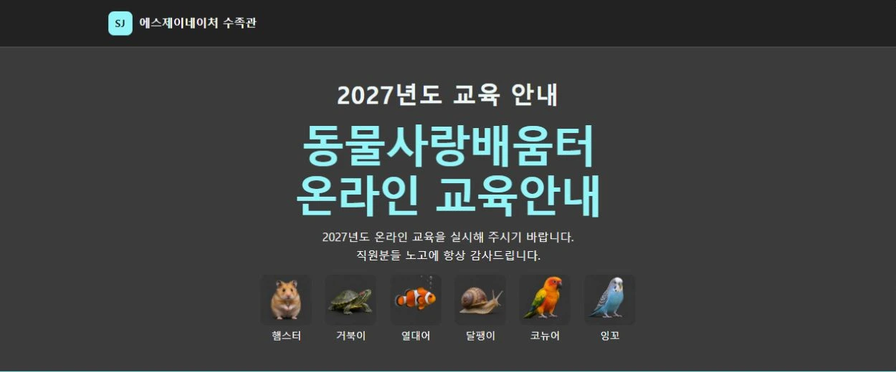
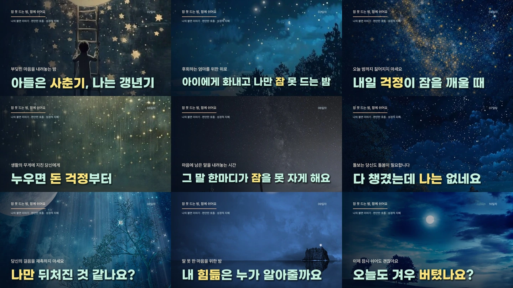
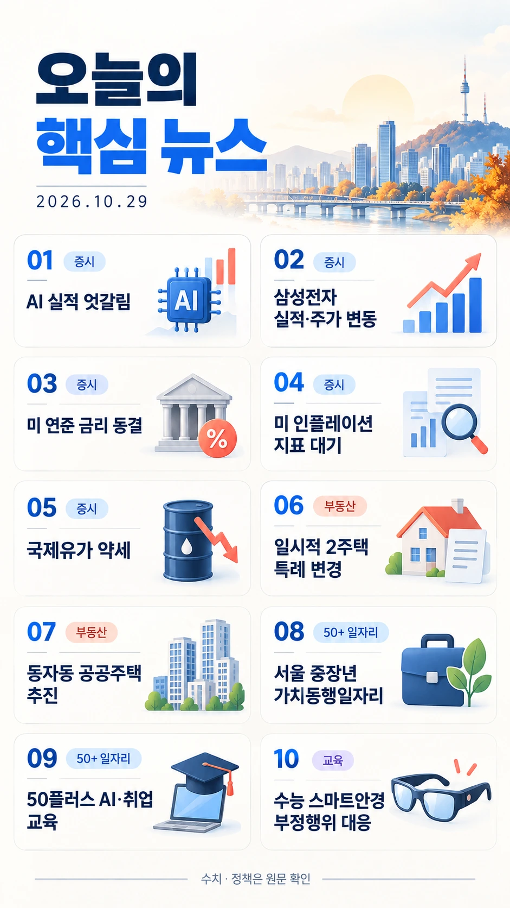
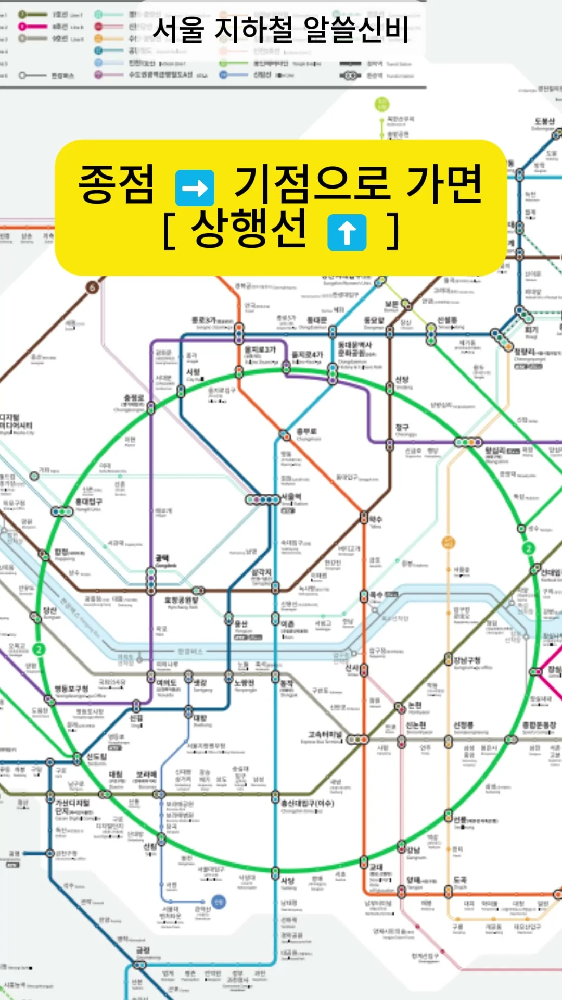
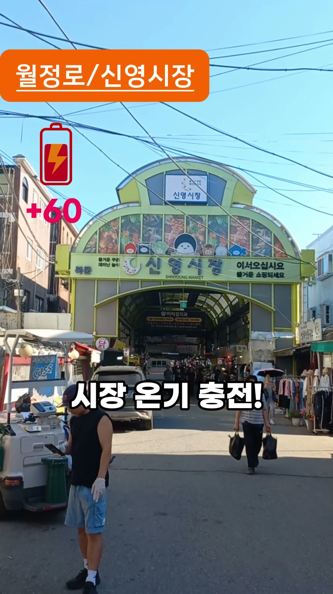

자료를 표로 정리하기
날짜·상품명·단위·수량·단가·금액·누적합계 항목으로 자료 정리를 요청합니다.
필요한 항목을 지정해 표 형태로 정리합니다.
업무에 AI를 더하고, 결과물로 보여드립니다
물류 행정, 초등학생 학습 지도, 지역 홍보 영상 제작을 경험했습니다. AI를 활용한 행정 업무와 다양한 디지털 콘텐츠 제작으로 역량을 넓혀가고 있습니다.
01 · AI 업무 활용
자료 정리부터 문서 초안까지, 업무에 필요한 형태로 AI를 활용합니다.
날짜·상품명·단위·수량·단가·금액·누적합계 항목으로 자료 정리를 요청합니다.
필요한 항목을 지정해 표 형태로 정리합니다.
자료의 수량과 단가를 바탕으로 금액과 누적합계 계산을 요청합니다.
표 정리와 계산 작업을 연결합니다.
목적과 필요한 내용을 전달해 문서 초안을 요청합니다.
초안을 바탕으로 내용을 검토하고 수정합니다.
회의 내용을 정리하고 요약하도록 요청합니다.
회의 내용을 간추려 확인합니다.
02 · 콘텐츠 작품
웹사이트와 이미지 콘텐츠, 직접 기획·촬영·편집한 영상을 소개합니다.

이미지 크게 보기 ↗ — 동물사랑배움터 교육 안내, 새 탭동물 관련 온라인 교육을 안내하는 웹페이지입니다.
원본 보기 — 동물사랑배움터 교육 안내, 새 탭기상 시간, 졸릴 때 눕기, 걱정 기록 등 수면 실천 내용을 정리한 5장 카드뉴스입니다.
원본 보기 — 불면증 인지행동치료 카드뉴스, 새 탭
이미지 크게 보기 ↗ — 유튜브 썸네일 만들기, 새 탭글씨체·색상·배치를 정한 샘플을 바탕으로 나머지 썸네일 제작을 요청한 실습입니다.
원본 보기 — 유튜브 썸네일 만들기, 새 탭
이미지 크게 보기 ↗ — 50대 관심 분야 뉴스 인포그래픽, 새 탭주식·부동산·교육·복지 관련 뉴스를 정리한 인포그래픽입니다.
원본 보기 — 50대 관심 분야 뉴스 인포그래픽, 새 탭
약 58초 · 세로 영상
지하철의 운행 방향과 진입 소리에 관한 정보를 자막과 그래픽으로 전달하는 세로 영상입니다.
사용 도구Gemini · CapCut
담당 작업기획·촬영·편집
영상을 불러오지 못했습니다. 다시 시도하거나 새 탭에서 열어 주세요.
영상 새 탭에서 열기 — 서울 지하철 알쓸신비
약 59초 · 세로 영상
월정로·신영시장과 신트리공원을 둘러보며 지역의 장소를 소개하는 세로 영상입니다.
사용 도구Gemini
담당 작업기획·촬영·편집
영상을 불러오지 못했습니다. 다시 시도하거나 새 탭에서 열어 주세요.
영상 새 탭에서 열기 — 양천원픽03 · 경력·자격